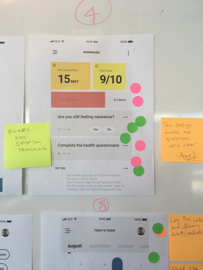
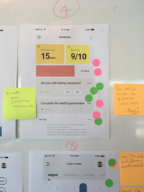
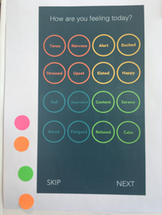
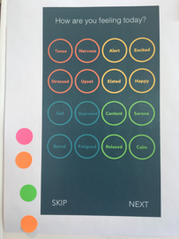
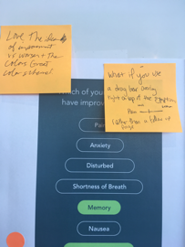
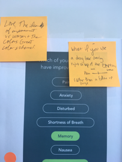
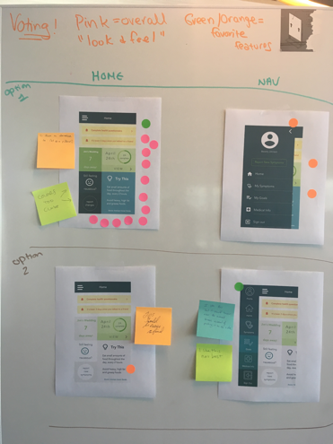
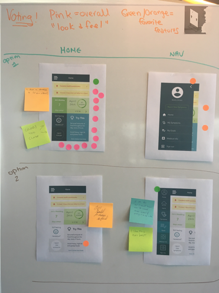
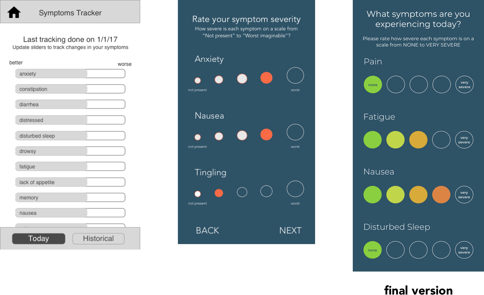

Haley is a mobile application that aims to bring continuous care to patients who have been discharged from the hospital. Patients enter their symptoms and moods on a regular basis on the app, and Haley in return provides suggestions and advice to the patients. The data collected from monitoring symptoms and moods is also relayed back to the patient’s doctor.
The Approach
For the ideation phase, different versions of the app were created. After pushing pixels, a drop-in style design crit was done at the Accenture office. A sticker dot voting system was used for individuals to vote on their favorite features.

 

 

 



 

Key Insights
Recording of symptoms got the most feedback. People preferred the random layout versus stacked as the stacked was viewed as a hierarchal.

Severity scaling was viewed positively with the colors indicating severity rather than circle size.
Filling out health surveys is percieved as stressful and tedious paperwork. The guided onboarding process of one question per screen, with indication of progress at the top helped users feel a sense of completion.